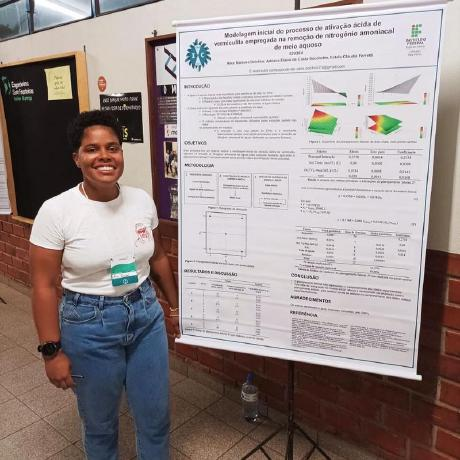

A JG é mais do que uma loja de roupas; é um reflexo da diversidade, força e autenticidade que define as pessoas no Brasil. Nossa essência nasce das raízes do país, e cada peça que criamos busca transmitir a resiliência, coragem e liberdade de quem traça sua própria jornada, seja nas cidades dinâmicas ou nos cantos tranquilos do interior. Nossa moda é pensada para quem busca autenticidade, conforto e estilo, independentemente de gênero. As peças da JG celebram a individualidade e o bem-estar, oferecendo versatilidade e sofisticação em cada detalhe. Com uma paleta de cores neutras e terrosas, inspirada nas paisagens brasileiras, nossas criações conectam-se tanto com a natureza quanto com a essência de cada pessoa.
A JG veste com propósito, seja para as rotinas do dia a dia ou para momentos especiais. Criamos roupas que se adaptam a diferentes estilos, corpos e personalidades, proporcionando conforto e elegância em equilíbrio. Nossa marca valoriza a autenticidade e a liberdade de expressão, proporcionando peças que dialogam com quem busca se conectar consigo e com o mundo. Na JG, cada peça é uma celebração de um Brasil forte, diverso e, acima de tudo, AUTÊNTICO.

Alice
Ana
Fernanda
Larissa
Ludmylla
Juliana
Roberta
Yasmin